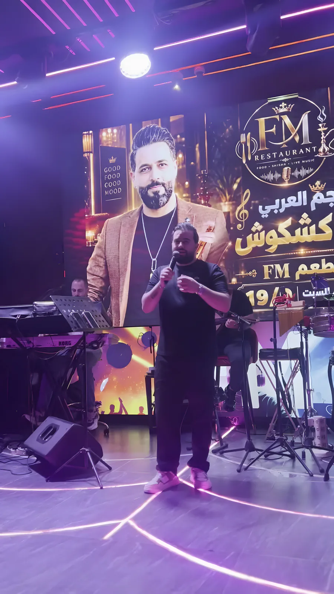
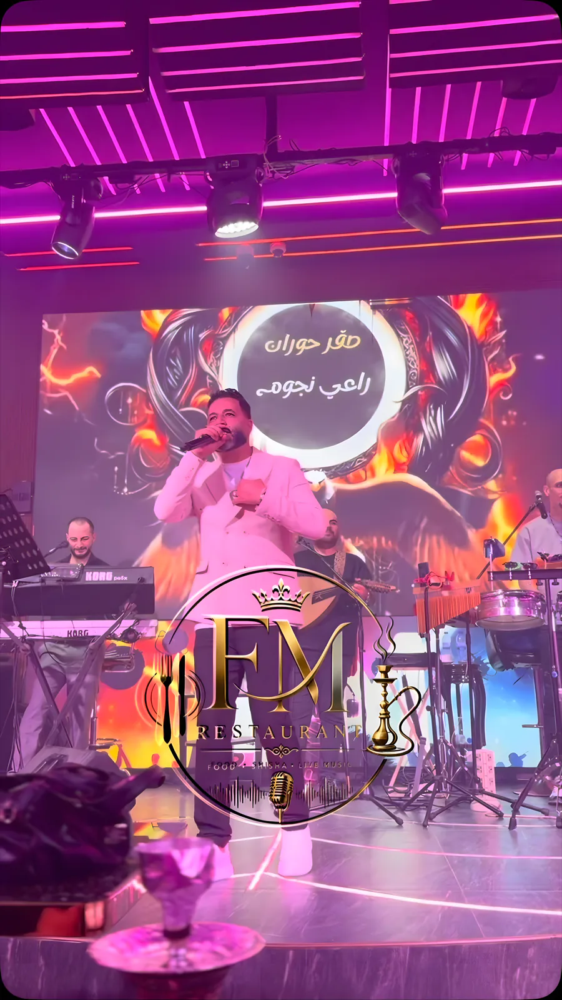
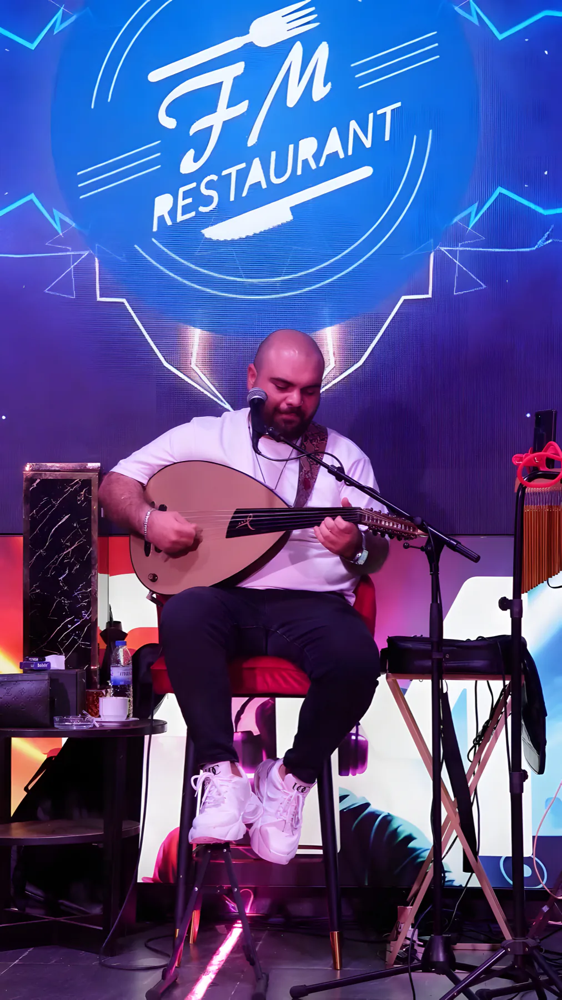
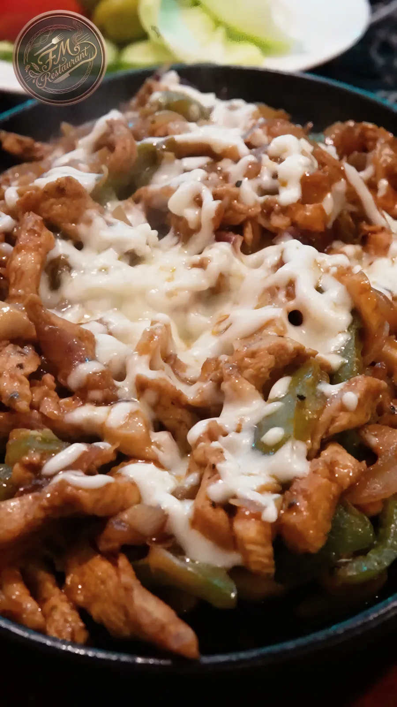
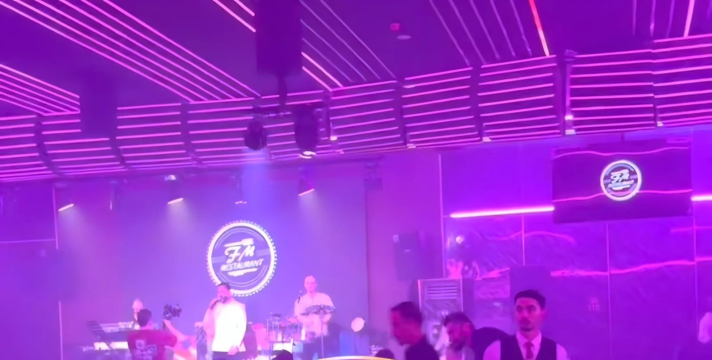

السهرات، الأكل والشيشة
كل شي بتلاقيه عندنا في FM على كورنيش عجمان، من الغدا لآخر أغنية بالسهرة. لأي شي من هون، رسالة واتساب وحدة على 050 477 0438 بتكفي.

01
سهرات الطرب الحيّة
كل ليلة من الساعة 10: مطرب وفرقة على المسرح، عود وكيبورد وإيقاع. والجمعة والسبت نجوم الطرب العربي ضيوفنا.
- سهرتنا اليومية الساعة 10:00 مساءً
- سهرات الويكند مع نجوم (من آخر الضيوف: راشيل سيف، رائد كشكوش، بهاء اليوسف، طارق القيم، جلال حمادي، رامي عبدو)
- بعض الليالي الدخول مجاني، ومكتوب على البوستر
- السهرات الجديدة بتنزل أول بأول على انستغرام @fmresturantcafe


02
الأكل
مطبخ شرقي، ينطلب على طاولتك والسهرة ماشية.
- عروض الفطور والغدا، اسأل عن عرض اليوم
- الطلب مفتوح طول السهرة والفرقة عم تعزف
- بدك تشوف المنيو قبل؟ منبعتلك ياه على واتساب

03
شيشة مميزة
على طاولتك مع الفرقة، أو بقعدة العصر.
احجز طاولة04
الصالة
من 2009 على كورنيش عجمان، شارع الشيخ حميد بن راشد النعيمي. الطاولات مقابل المسرح، والصالة بتولّع بنفسجي أول ما تبلّش الفرقة.

05
للحجز والاستفسار
050 477 0438مفتوحين طول اليوم، والسهرة من الساعة 10. ابعتلنا على واتساب ومنرد عليك.